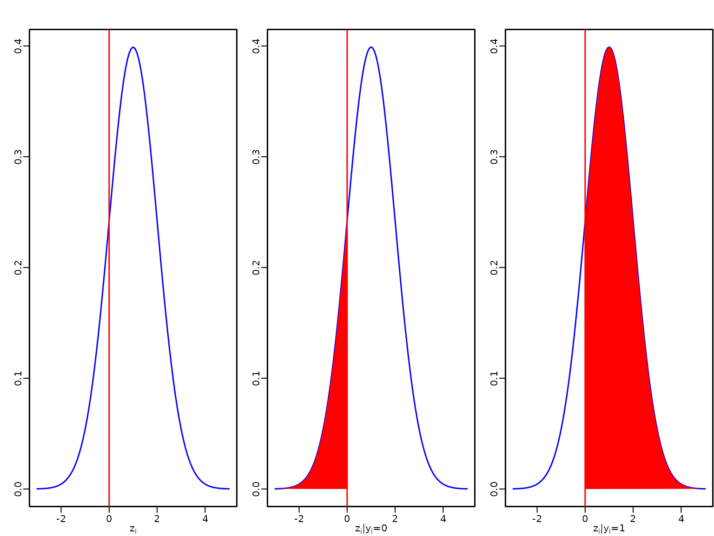
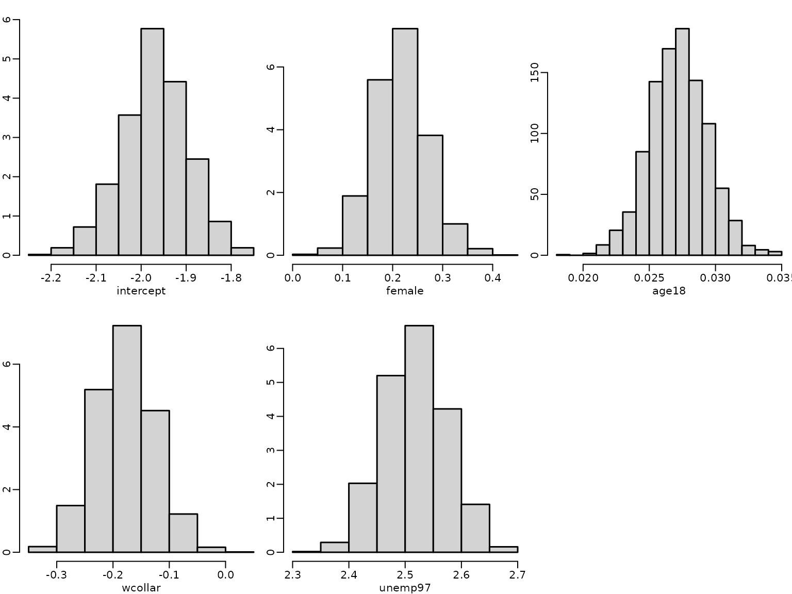
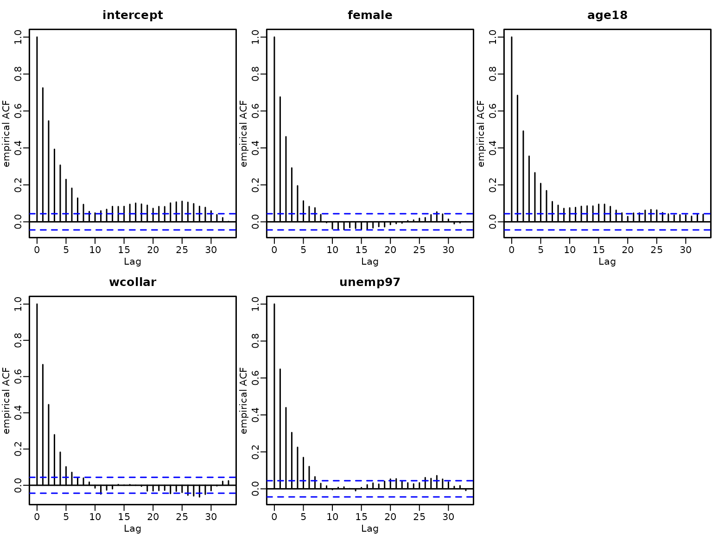
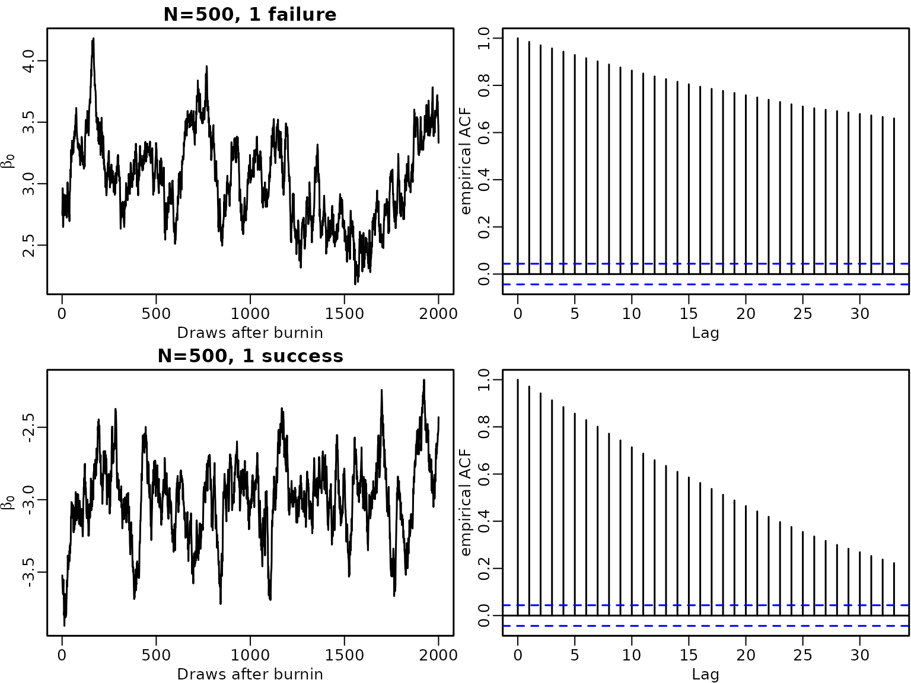
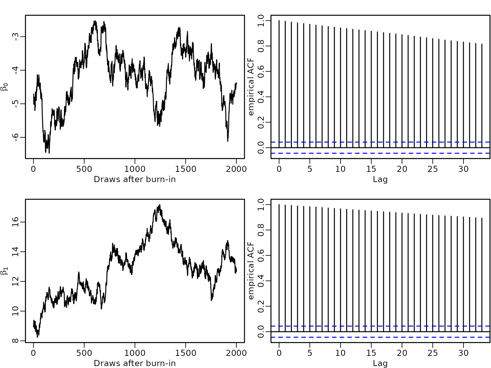
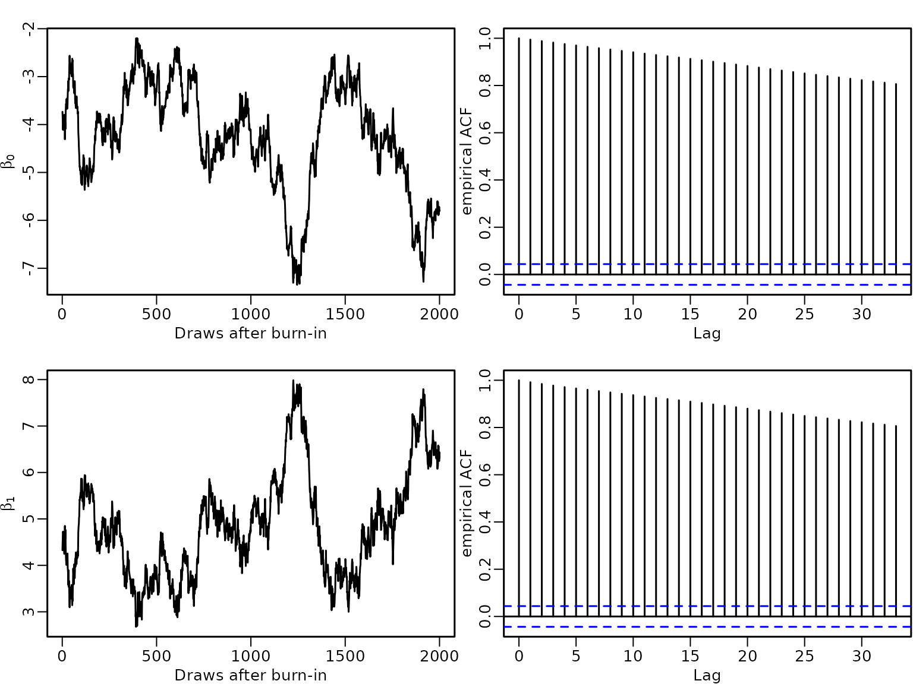
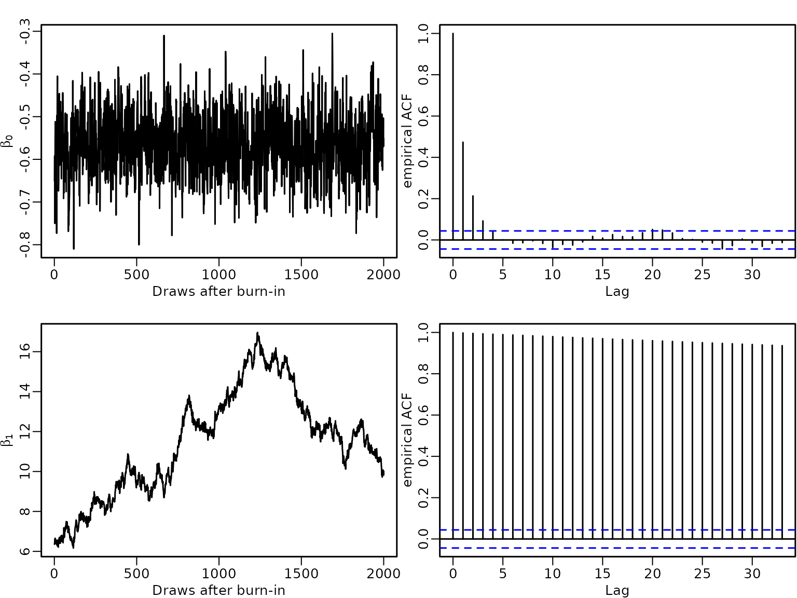
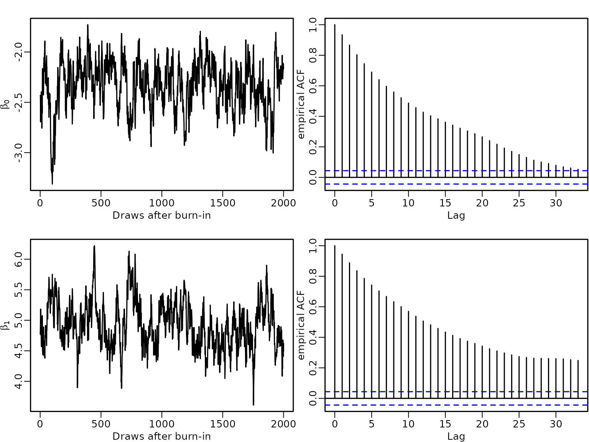

Chapter 8: Beyond Standard Regression Analysis
Chapter08.RmdSection 8.1: Binary response variables
Section 8.1.1: Probit model
Figure 8.1: Latent utility and outcome in the probit model
We start by visualising a latent utility for a linear predictor with a value of 1.
curve(dnorm(x, mean = 1), from = -3, to = 5, col = "blue",
xlab = expression(z[i]), ylab = "")
abline(v = 0, col = "red")
dens <- curve(dnorm(x, mean = 1), from = -3, to = 5, n = 161, col = "blue",
xlab = expression(paste(z[i], "|", y[i], "=0")), ylab = "")
abline(v = 0, col = "red")
polygon(c(dens$x[dens$x <= 0], 0), c(dens$y[dens$x <= 0], 0),
col = "red", border = NA)
dens <- curve(dnorm(x, mean = 1), from = -3, to = 5, n = 161, col = "blue",
xlab = expression(paste(z[i], "|", y[i], "=1")), ylab = "" )
abline(v = 0, col = "red")
polygon(c(dens$x[dens$x >= 0], 0), c(dens$y[dens$x >= 0], 0),
col = "red", border = NA)
Example 8.1: Labor market data
We now perform probit regression analysis for the labor market data.
library("BayesianLearningCode")
data("labor", package = "BayesianLearningCode")We model the income in 1998, binarized into unemployed (zero income) and employed as dependent variable, and use as covariates the variables female (binary), age18 (quantitative, centered at 18 years), wcollar (binary), and unemployed in 1997 (binary). The baseline person is hence an 18 year old male blue collar worker who was employed in 1997.
Example 8.2
The regression coefficients are estimated using data augmentation and Gibbs sampling. We define a function yielding posterior draws using the algorithm detailed in Section 8.1.1.
probit <- function(y, X, b0 = 0, B0 = 10000,
burnin = 1000L, M = 20000L) {
N <- length(y)
d <- ncol(X) # number of regression effects
B0.inv <- diag(rep(1 / B0, length.out = d), nrow = d)
b0 <- rep(b0, length.out = d)
B0inv.b0 <- B0.inv %*% b0
betas <- matrix(NA_real_, nrow = M, ncol = d)
colnames(betas) <- colnames(X)
z <- rep(NA_real_, N)
# Define quantities for the Gibbs sampler
BN <- solve(B0.inv + crossprod(X))
ind0 <- (y == 0) # indicators for zeros
ind1 <- (y == 1) # indicators for ones
# Set starting values
beta <- c(qnorm(mean(y)), rep(0, d-1))
for (m in seq_len(burnin + M)) {
# Draw z conditional on y and beta
u <- runif(N)
eta <- X %*% beta
pi <- pnorm(eta)
z[ind0] <- eta[ind0] + qnorm(u[ind0] * (1 - pi[ind0]))
z[ind1] <- eta[ind1] + qnorm(1 - u[ind1] * pi[ind1])
# Sample beta from the full conditional
bN <- BN %*% (B0inv.b0 + crossprod(X, z))
beta <- t(mvtnorm::rmvnorm(1, mean = bN, sigma = BN))
# Store the beta draws
if (m > burnin) {
betas[m - burnin, ] <- beta
}
}
return(betas)
}We specify the prior on the regression effects as a rather flat normal independence prior and estimate the model parameters.
set.seed(1234)
M <- 20000
betas <- probit(y.unemp, X.unemp, b0 = 0, B0 = 1000L, burnin = 1000, M = M)To compute summary statistics from the posterior we use the following function.
res.mcmc <- function(x, lower = 0.025, upper = 0.975) {
res <- c(quantile(x, lower), mean(x), quantile(x, upper))
names(res) <- c(paste0(lower * 100, "%"), "Posterior mean",
paste0(upper * 100, "%"))
res
}We show posterior means and equal-tailed 95% credible intervals of the regression effects.
| 2.5% | Posterior mean | 97.5% | |
|---|---|---|---|
| intercept | -2.123 | -1.975 | -1.831 |
| female | 0.106 | 0.215 | 0.325 |
| age18 | 0.023 | 0.027 | 0.032 |
| wcollar | -0.293 | -0.183 | -0.074 |
| unemp97 | 2.412 | 2.523 | 2.637 |
Next, we determine the estimated risk of unemployment for a baseline person, i.e., a 18 year old male blue collar worker who was employed in 1997, using the posterior mean estimate of the intercept.
The estimated risk to be unemployed in 1998 for a baseline person is very low with a value of 0.0241 and even lower for a white collar worker. This risk is higher for a female, an older person and particularly high if the person was unemployed in 1997.
Nex, we visualize the estimated posterior distributions for the regression effects by histograms.
for (j in seq_len(ncol(betas))) {
hist(betas[, j], freq = FALSE, main = "", xlab = colnames(betas)[j],
ylab = "")
}
A plot of the autocorrelation of the draws shows that although there is some autocorrelation, it vanishes after a few lags.
for (j in seq_len(ncol(betas))) {
acf(betas[, j], main = "", xlab = "Lag",
ylab = "empirical ACF")
title(colnames(betas)[j])
}
We also determine the estimated effective sample sizes (ESSs) to assess the efficiency of the sampler.
library("coda")
ess <- round(coda::effectiveSize(betas), 1)
ineff <- round(M/ess, 2)
res_eff <- cbind(ess, ineff)
knitr::kable(res_eff)| ess | ineff | |
|---|---|---|
| intercept | 2861.8 | 6.99 |
| female | 3726.1 | 5.37 |
| age18 | 2759.0 | 7.25 |
| wcollar | 3558.7 | 5.62 |
| unemp97 | 3615.4 | 5.53 |
The effective sample size is larger than 2759 for each regression effect, thus yielding inefficiency factors below 7.25.
The sampler is easy to implement, however there might be problems when the response variable contains either only very few or very many successes.
Example 8.3
To illustrate this issue, we use data where in trials only 1 failure or only 1 success is observed.
set.seed(1234)
N <- 500
X <- matrix(1, nrow = N)
y1 <- c(0, rep(1, N-1))
betas1 <- probit(y1, X, b0 = 0, B0 = 10000, burnin = 1000, M = M)
y2 <- c(rep(0, N-1), 1)
betas2 <- probit(y2, X, b0 = 0, B0 = 10000, burnin = 1000, M = M)In both cases the empirical autocorrelation of the draws decreases very slowly and remains high even for a lag of 40.
labels <- expression(beta[0])
plot(betas1, type = "l", main = "N=500, 1 failure", xlab = "Draws after burnin",
ylab = labels)
acf(betas1, ylab = "empirical ACF")
(ess1 <- effectiveSize(betas1))
#> var1
#> 165.9583
round(M/ess1, 2)
#> var1
#> 120.51
plot(betas2, type = "l", main = "N=500, 1 success", xlab = "Draws after burnin",
ylab = labels)
acf(betas2, ylab = "empirical ACF")
(ess2 <- effectiveSize(betas2))
#> var1
#> 150.8803
round(M/ess2, 2)
#> var1
#> 132.56Hence for these data sets the estimated ESS of the intercept has a value of ~ 150, yielding an inefficiency factor of ~ 130.
High autocorrelation in MCMC draws for probit models occur not only when either successes or failures are rare, but also when a covariate (or a linear combination of covariates) perfectly allows to predict successes and/or failures. Complete separation means that both successes and failures can be perfectly predicted by a covariate, whereas quasi-complete separation means that either successes or failures can be predicted perfectly.
Example 8.4
To illustrate the effect of complete separation on the estimates, we generate observations where half of them are successes and the other half are failures. We add a binary predictor where for we observe only successes and for only failures.
N <- 500
ns <- 250
x.sep <- rep(c(0, 1), c(ns, N - ns))
y <- rep(c(0, 1), c(ns, N - ns))
table(x.sep, y)
#> y
#> x.sep 0 1
#> 0 250 0
#> 1 0 250We estimate the model parameters under the Normal prior $\Normal{mathbf{0}, 10000\mathbf{I}}$ and run the sampler for iterations after a burnin of 1000.
From the plot of the ACF of the draws we see that auto are close to 1 even at lag 40.
set.seed(1234)
X.sep <- cbind(rep(1, N), x.sep)
betas.sep <- probit(y, X.sep, b0 = 0, B0 = 10000, burnin = 1000, M = M)
labels <- expression(beta[0], beta[1])
plot(betas.sep[, 1], type = "l", xlab = "Draws after burnin", ylab = labels[1])
acf(betas.sep[, 1], ylab = "empirical ACF")
plot(betas.sep[, 2], type = "l", xlab = "Draws after burnin", ylab = labels[2])
acf(betas.sep[, 2], ylab = "empirical ACF")
(ess.sep <- round(coda::effectiveSize(betas.sep), 2))
#> x.sep
#> 8.38 8.27
round(M/ess.sep, 2)
#> x.sep
#> 2386.63 2418.38Hence the ESSs are very low with a value of ~ 8, resulting in inefficiency factors of ~2400.
Example 8.5
To illustrate quasi-separation we use the same responses as in Example 8.4, but now set for all successes and additionally for 100 failures. Hence for always a failure is observed, whereas for both successes and failures occur.
x.qus1 <- rep(c(0, 1), c(ns-100, N - ns+100))
table(x.qus1, y)
#> y
#> x.qus1 0 1
#> 0 150 0
#> 1 100 250We again estimate the regression effects using data augmentation and Gibbs Sampling.
set.seed(1234)
X.qus1 <- cbind(rep(1, N), x.qus1)
betas.qus1 <- probit(y, X.qus1, b0 = 0, B0 = 10000, burnin = 1000, M = M)
plot(betas.qus1[, 1], type = "l", xlab = "Draws after burnin", ylab = labels[1])
acf(betas.qus1[, 1], ylab = "empirical ACF")
plot(betas.qus1[, 2], type = "l", xlab = "Draws after burnin", ylab = labels[2])
acf(betas.qus1[, 2], ylab = "empirical ACF")
(ess.qus1 <- round(coda::effectiveSize(betas.qus1), 2))
#> x.qus1
#> 8.53 8.68
round(M/ess.qus1, 2)
#> x.qus1
#> 2344.67 2304.15Again autocorrelations are very high for both the intercept as well as the covariate effect resulting in high inefficiency factors of ~ 2340.
We now change the setting so that takes values of not only for failures but also for some successes, whereas for all successes.
x.qus2 <- rep(c(0, 1), c(ns+100, N - ns-100))
table(x.qus2, y)
#> y
#> x.qus2 0 1
#> 0 250 100
#> 1 0 150
set.seed(1234)
X.qus2 <- cbind(rep(1, N), x.qus2)
betas.qus2 <- probit(y, X.qus2, b0 = 0, B0 = 10000, burnin = 1000, M = M)
par(mfrow = c(2, 2), mar = c(2.5, 2.5, 1.5, .1), mgp = c(1.5, .5, 0), lwd = 1.5)
plot(betas.qus2[, 1], type = "l", xlab = "Draws after burnin", ylab = labels[1])
acf(betas.qus2[, 1], ylab = "empirical ACF")
plot(betas.qus2[, 2], type = "l", xlab = "Draws after burnin", ylab = labels[2])
acf(betas.qus2[, 2], ylab = "empirical ACF")
(ess.qus2 <- round(coda::effectiveSize(betas.qus2), 2))
#> x.qus2
#> 7748.60 6.28
(ineff.qus2 <- round(M/ess.qus2, 2))
#> x.qus2
#> 2.58 3184.71Autocorrelations of the intercept are low and close to zero for small lags but remain very high for the covariate effect. Hence we have a high ESS for the intercept (7748.6) and low for the covariate effect (6.28), resulting in an inefficiency factor of 2.58 for the intercept, but of 3184.71 for the effect of the covariate.
High autocorrelations typically indicate problems with the sampler. If there is complete or quasi-complete separation in the data, the likelihood is monotone and the maximum likelihood estimate does not exist. In a Bayesian approach using a flat, improper prior on the regression effects will result in an improper posterior distribution. Hence, a proper prior is required to avoid improper posteriors in case of separation.
We now analyze the data of example 8.4. under the more informative prior . This prior distribution encodes the prior believe that and are in the interval $ with probability .
We compare the estimation results to those from example 8.4, where the prior was .
set.seed(1234)
betas.sep1 <- probit(y, X.sep, b0 = 0, B0 = 1, burnin = 1000, M = M)
# compare results to the less informative prior
res_betas.sep <- t(apply(betas.sep, 2, res.mcmc))
rownames(res_betas.sep) <- c("Intercept", "X")
ess.sep <- effectiveSize(betas.sep)
ineff.sep <- M/ess.sep
res.sep <- round(cbind(res_betas.sep, ess.sep, ineff.sep), 2)
colnames(res.sep)[4:5] <- c("ESS", "Inefficiency")
knitr:: kable(res.sep)| 2.5% | Posterior mean | 97.5% | ESS | Inefficiency | |
|---|---|---|---|---|---|
| Intercept | -13.35 | -6.71 | -3.08 | 8.38 | 2387.91 |
| X | 7.49 | 13.64 | 20.02 | 8.27 | 2418.41 |
res_betas.sep1 <- t(apply(betas.sep1, 2, res.mcmc))
rownames(res_betas.sep1) <- c("Intercept", "X")
ess.sep1 <- effectiveSize(betas.sep1)
ineff.sep1 <- M/ess.sep1
res.sep1 <- round(cbind(res_betas.sep1, ess.sep1, ineff.sep1), 2)
colnames(res.sep1)[4:5] <- c("ESS", "Inefficiency")
knitr:: kable(res.sep1)| 2.5% | Posterior mean | 97.5% | ESS | Inefficiency | |
|---|---|---|---|---|---|
| Intercept | -2.85 | -2.35 | -1.92 | 707.91 | 28.25 |
| X | 4.21 | 4.88 | 5.62 | 604.79 | 33.07 |
We see that with the tighter prior the estimates are more shrunk to zero, estimates ESSs are higher and inflation p
plot(betas.sep1[, 1], type = "l", xlab = "Draws after burnin", ylab = labels[1])
acf(betas.sep1[, 1], ylab = "empirical ACF")
plot(betas.sep1[, 2], type = "l", xlab = "Draws after burnin", ylab = labels[2])
acf(betas.sep1[, 2], ylab = "empirical ACF")
Correspondingly the autocorrelation of the draws are much lower under the tighter prior.
Section 8.1.2: Logit model
Example 8.6: Labor market data
We now estimate a logistic regression model for the labor market data using the two-block Polya-Gamma sampler.
logit <- function(y, X, b0 = 0, B0 = 10000,
burnin = 1000L, M = 5000L) {
N <- length(y)
d <- ncol(X) # number regression effects
B0.inv <- diag(rep(1 / B0, length.out = d), nrow = d)
b0 <- rep(b0, length.out = d)
B0inv.b0 <- B0.inv %*% b0
betas <- matrix(NA_real_, nrow = M, ncol = d)
colnames(betas) <- colnames(X)
# Define quantities for the Gibbs sampler
ind0 <- (y == 0) # indicators for zeros
ind1 <- (y == 1) # indicators for ones
# Set starting values
beta <- rep(0, d)
z <- rep(NA_real_, N)
omega <-rep(NA_real_, N)
for (m in seq_len(burnin + M)) {
# Draw z conditional on y and beta
eta <- X %*% beta
pi <- plogis(eta)
u <- runif(N)
z[ind0] <- eta[ind0] + qlogis(u[ind0] * (1 - pi[ind0]))
z[ind1] <- eta[ind1] + qlogis (1 - u[ind1] * pi[ind1])
# Draw omega conditional on y, beta and z
omega <- pgdraw::pgdraw(b = 1, c = z - eta)
# Sample beta from the full conditional
Xomega <- matrix(omega, ncol = d, nrow = N) * X
BN <- solve(B0.inv + crossprod(Xomega, X))
bN <- BN %*% (B0inv.b0 + crossprod(Xomega, z))
beta <- t(mvtnorm::rmvnorm(1, mean = bN, sigma = BN))
# Store the beta draws
if (m > burnin) {
betas[m - burnin, ] <- beta
}
}
return(betas)
}We again use the flat independence normal prior on the regression effects and estimate the model. We summarize the posterior effect estimates and determine the risk of unemployment for a baseline person using the fitted logit model.
set.seed(1234)
betas_logit <- logit(y.unemp, X.unemp, b0 = 0, B0 = 10000)
res_logit.labour <- t(apply(betas_logit, 2, res.mcmc))
knitr::kable(round(res_logit.labour, 3))| 2.5% | Posterior mean | 97.5% | |
|---|---|---|---|
| intercept | -4.074 | -3.674 | -3.302 |
| female | 0.139 | 0.409 | 0.670 |
| age18 | 0.044 | 0.056 | 0.068 |
| wcollar | -0.603 | -0.342 | -0.078 |
| unemp97 | 4.103 | 4.382 | 4.663 |
The risk of being unemployed 1998 for a male blue collar worker of age 18, who was employed 1997 is very low with a value of 0.0247 and the risk is even lower for a white collar worker. It is higher for females, increases with age and is particularly high for persons who were unemployed 1997.
While the signs of the covariate effects can be interpreted in the same way for the probit and the logit model, their numerical value will differ due to the different scale of the link function.
As the logistic distribution has a variance of compared to 1 for the standard Normal distribution, the regression effects in the logit model are absolutely larger than those in the probit model. However any probability computed from the two models will be very close, e.g., the estimated probability to be unemployed for a baseline person is 0.0241 in the probit model (compared to 0.0247 in the logit model).
By multiplying the estimated coefficients in the probit model by we can compare them to those of the logit model and we see that there is not much difference.
| 2.5% | Posterior mean | 97.5% | |
|---|---|---|---|
| intercept | -3.850 | -3.583 | -3.321 |
| female | 0.191 | 0.389 | 0.589 |
| age18 | 0.042 | 0.050 | 0.058 |
| wcollar | -0.531 | -0.331 | -0.134 |
| unemp97 | 4.375 | 4.577 | 4.783 |
Section 8.2: Count response variables
Section 8.2.1: Poisson regression models
Example 8.7: Road safety data
We fit two different Poisson regression models to the series of monthly death and seriously injured children aged 6-10 in Linz introduced in Example 2.1:
a small model with intercept, intervention effect and holiday dummy (activated in July/August);
a larger model with intercept, intervention effect, linear trend, and a seasonal pattern captured by monthly dummies.
The sampler performance for these two models is assessed to study how the acceptance rate deteroriates, when the dimension of regression effects increases.
We load the data and extract the observations for the children in Linz.
data("accidents", package = "BayesianLearningCode")
y <- accidents[, "children_accidents"]
e <- accidents[, "children_exposure"]Then, we define the regressor matrix.
X <- cbind(intercept = rep(1, length(y)),
intervention = rep(c(0, 1), c(7 * 12 + 9, 8 * 12 + 3)),
holiday = rep(rep(c(0, 1, 0), c(6, 2, 4)), 16))To compute the parameters of the normal proposal density, we use the Newton-Raphson estimator described in Section 8.2.1.
gen.proposal.poisson <- function(y, X, e, b0 = 0, B0 = 100, t.max = 20){
N <- length(y)
d <- ncol(X)
betas <- matrix(NA_real_, ncol = t.max, nrow = d)
beta.new <- matrix(c(log(mean(y)), rep(0, d - 1)), nrow=d)
b0 <- matrix(rep(b0, length.out = d), nrow=d)
B0.inv <-diag(rep(1 / B0, length.out = d), nrow = d)
for (t in seq_len(t.max)) {
beta.old <- beta.new
rate <- e * exp(X %*% beta.old)
score <- t(crossprod(y - rate, X) - t(beta.old - b0) %*% B0.inv)
H <- -B0.inv
for (i in seq_len(N)) {
H <- H - rate[i] * tcrossprod(X[i, ])
}
beta.new <- beta.old - solve(H, score)
}
qmean <- beta.new
# Determine the variance matrix
rate <- e * exp(X %*% qmean)
H <- -B0.inv
for (i in seq_len(N)) {
H <- H - rate[i] * tcrossprod(X[i, ])
}
qvar <- -solve(H)
return(parms.proposal = list(mean = qmean,
var = qvar))
}We use a rather flat normal prior $\Normal{mathbf{0}, 100 \mathbf{100}}$ on the regression effects and first determine the parameters of a Normal proposal distribution.
parms.proposal <- gen.proposal.poisson(y, X, e, b0 = 0, B0 = 100)
parms.proposal
#> $mean
#> rate
#> [1,] -8.2140876
#> [2,] -0.3608576
#> [3,] -0.7739759
#>
#> $var
#> [,1] [,2] [,3]
#> [1,] 0.005251979 -0.0049915918 -0.0031889269
#> [2,] -0.004991592 0.0115517153 0.0002195915
#> [3,] -0.003188927 0.0002195915 0.0364108173Next we set up the independence Metropolis-Hastings algorithm and estimate the model parameters.
poisson <- function(y, X, e, b0 = 0, B0 = 100, qmean, qvar,
burnin = 1000L, M = 10000L) {
d <- ncol(X)
beta.post <- matrix(ncol = d, nrow = M)
colnames(beta.post) <- colnames(X)
acc <- numeric(length = M)
b0 <- rep(b0, length.out = d)
B0 <- diag(rep(B0, length.out = d), nrow = d)
beta <- as.vector(mvtnorm::rmvnorm(1, mean = qmean, sigma = qvar))
for (m in seq_len(burnin + M)) {
beta.old <- beta
beta.proposed <- as.vector(mvtnorm::rmvnorm(1, mean = qmean, sigma = qvar))
# Compute log proposal density at proposed and old value
lq_proposed <- mvtnorm::dmvnorm(beta.proposed, mean = qmean, sigma = qvar,
log = TRUE)
lq_old <- mvtnorm::dmvnorm(beta.old, mean = qmean, sigma = qvar,
log = TRUE)
# Compute log prior of proposed and old value
lpri_proposed <- mvtnorm::dmvnorm(beta.proposed, mean = b0, sigma = B0,
log = TRUE)
lpri_old <- mvtnorm::dmvnorm(beta.old, mean = b0, sigma = B0,
log = TRUE)
# Compute log-likelihood of proposed and old value
lh_proposed <- dpois(y, e * exp(X %*% beta.proposed), log = TRUE)
lh_old <- dpois(y, e * exp(X %*% beta.old), log = TRUE)
maxlik <- max(lh_old, lh_proposed)
ll <- sum(lh_proposed - maxlik) - sum(lh_old - maxlik)
# Compute acceptance probability and accept or not
log_acc <- min(0, ll + lpri_proposed - lpri_old + lq_old - lq_proposed)
if (log(runif(1)) < log_acc) {
beta <- beta.proposed
accept <- 1
} else {
beta <- beta.old
accept <- 0
}
# Store the beta draws
if (m > burnin) {
beta.post[m-burnin, ] <- beta
acc[m-burnin] <- accept
}
}
return(res = list(beta.post = beta.post, accept = mean(acc)))
}
set.seed(1234)
res1 <- poisson(y, X, e, b0 = 0, B0 = 100,
qmean = parms.proposal$mean, qvar = parms.proposal$var)
res.poisson1 <- t(apply(res1$beta.post, 2, res.mcmc))
knitr::kable(round(res.poisson1, 3))| 2.5% | Posterior mean | 97.5% | |
|---|---|---|---|
| intercept | -8.363 | -8.217 | -8.077 |
| intervention | -0.572 | -0.361 | -0.145 |
| holiday | -1.185 | -0.794 | -0.432 |
base_risk=(exp(res.poisson1[1,"Posterior mean"])*10^4)
res1$accept
#> [1] 0.9349The baseline risk is `r base_risk’ and it is lower in holiday months as well as after the intervention.
We then fit an alternative model with intercept, intervention effect, linear trend and seasonal dummy variables.
seas <- rbind(diag(1, 11), rep(-1, 11))
seas.dummies <- matrix(rep(t(seas), 16), ncol = 11, byrow = TRUE)
colnames(seas.dummies) <- c("Jan", "Feb", "Mar", "Apr", "May", "Jun", "Jul",
"Aug", "Sep", "Oct", "Nov")
X.large <- cbind(X[,-3],
lin.trend = 1:length(y),
seas.dummies)We set the prior parameters and compute parameters of the proposal distribution.
parms.proposal2 <- gen.proposal.poisson(y, X.large, e, b0 = 0, B0 = 100)Next we fit the model.
set.seed(1234)
res2 <- poisson(y, X.large, e, b0 = 0, B0 = 100,
qmean = parms.proposal2$mean, qvar = parms.proposal2$var)
res.poisson2 <- t(rbind(apply(res2$beta.post, 2, res.mcmc)))
knitr::kable(round(res.poisson2, 3))| 2.5% | Posterior mean | 97.5% | |
|---|---|---|---|
| intercept | -8.595 | -8.361 | -8.133 |
| intervention | -0.746 | -0.321 | 0.103 |
| lin.trend | -0.004 | 0.000 | 0.003 |
| Jan | -0.059 | 0.285 | 0.595 |
| Feb | -0.778 | -0.340 | 0.062 |
| Mar | -0.248 | 0.108 | 0.447 |
| Apr | 0.031 | 0.340 | 0.649 |
| May | -0.651 | -0.242 | 0.147 |
| Jun | 0.109 | 0.413 | 0.705 |
| Jul | -1.049 | -0.570 | -0.137 |
| Aug | -1.235 | -0.700 | -0.234 |
| Sep | -0.359 | 0.008 | 0.351 |
| Oct | 0.123 | 0.439 | 0.737 |
| Nov | -0.300 | 0.061 | 0.392 |
(base_risk2=(exp(res.poisson2[1,"Posterior mean"])*10^4))
#> [1] 2.337261
eff_dec=-rowSums(res2$beta.post[, 4:14])
(eff_dec.res <- round(c(quantile(eff_dec, probs=0.025),
mean(eff_dec),
quantile(eff_dec, probs=0.975)),3))
#> 2.5% 97.5%
#> -0.152 0.200 0.521In Model 2 the estimated baseline risk is similar that from model 1 with 0 dead or seriously injured children per 10 000 at risk. Also the estimated intervention effect is very similar in both models, indicating a reduction of the risk by a factor of 0.72 in model 2 (compared to a factor of 0.70 in model 1). The posterior mean for the linear trend effect is zero, and hence we can conclude that there is no linear trend.
With respect to monthly effects, we see that there is a positive effect, i.e. an increased risk for a child in Linz to be killed or seriously injured in the months April, June and October, whereas it is considerably smaller in the holiday months July and August. As noted above, due to the sum to zero constraint the effect of December results as the negative of the sum of the effects of all other months.
res2$accept
#> [1] 0.7503The acceptance rate is 0.93 for the smaller model 1 with three parameters, but only 0.75 for model 2, where 14 parameters have to be estimated.
Section 8.2.2: Negative binomial regression
Example 8.8: Road safety data
Now we analyze the road safety data allowing for unobserved heterogeneity. We first set up the two versions of the three-block MH-within-Gibbs sampler.
Note that the negative binomial distribution in R is specified as or alternatively by the parameters and its expected value The expected value of his given as and we will use and to specify the negative binomial distribution.
negbin <- function(y, X, e, b0 = 0, B0 = 100, qmean, qvar, pri.alpha,
full.gibbs = FALSE, burnin = 1000L, M = 50000L) {
N <- length(y)
d <- ncol(X)
beta.post <- matrix(ncol = d, nrow = M)
colnames(beta.post) <- colnames(X)
b0 <- rep(b0, length.out = d)
B0 <- diag(rep(B0, length.out = d), nrow = d)
acc.beta <- numeric(length = M)
alpha.post <- rep(NA_real_, M)
acc.alpha <- rep(NA_real_, M)
c_alpha <- 0.1
# Set starting values
beta <- as.vector(mvtnorm::rmvnorm(1, mean = qmean, sigma = qvar))
alpha <- pri.alpha$shape/pri.alpha$rate
phi <- rep(1, N)
for (m in seq_len(burnin + M)){
# Step 1: Draw beta
beta.old <- beta
beta.proposed <- as.vector(mvtnorm::rmvnorm(1, mean = qmean, sigma = qvar))
# Compute log proposal density at proposed and old value
lq_proposed <- mvtnorm::dmvnorm(beta.proposed, mean = qmean, sigma = qvar,
log = TRUE)
lq_old <- mvtnorm::dmvnorm(beta.old, mean = qmean, sigma = qvar,
log = TRUE)
# Compute log prior of proposed and old value
lpri_proposed <- mvtnorm::dmvnorm(beta.proposed, mean = b0, sigma = B0,
log = TRUE)
lpri_old <- mvtnorm::dmvnorm(beta.old, mean = b0, sigma = B0, log = TRUE)
# Compute log likelihood of proposed and old value
lh_proposed <- dpois(y, e * exp(X %*% beta.proposed), log = TRUE)
lh_old <- dpois(y, e * exp(X %*% beta.old), log = TRUE)
maxlik <- max(lh_old, lh_proposed)
ll <- sum(lh_proposed - maxlik) - sum(lh_old - maxlik)
# Compute acceptance probability and accept or not
log_acc <- min(0, ll + lpri_proposed - lpri_old + lq_old - lq_proposed)
if (log(runif(1)) < log_acc) {
beta <- beta.proposed
acc.b <- 1
}else{
beta <- beta.old
acc.b <- 0
}
linpred <- X %*% beta
# Step 2: Sample alpha
alpha.old <- alpha
alpha.proposed <- alpha.old * exp(c_alpha * rnorm(1))
if (full.gibbs) {
llik_alpha.proposed <- sum(dgamma(phi, shape = alpha.proposed,
rate = alpha.proposed, log = TRUE))
llik_alpha.old <- sum(dgamma(phi, shape = alpha.old,
rate = alpha.old, log = TRUE))
} else {
llik_alpha.proposed <- sum(dnbinom(y, size = alpha.proposed,
mu = e * exp(linpred), log = TRUE))
llik_alpha.old <- sum(dnbinom(y, size = alpha.old,
mu = e * exp(linpred), log = TRUE))
}
log_acc_alpha <- llik_alpha.proposed - llik_alpha.old +
dgamma(alpha.proposed, shape = pri.alpha$shape,
rate = pri.alpha$rate, log = TRUE) -
dgamma(alpha.old, shape = pri.alpha$shape,
rate = pri.alpha$rate,log=TRUE) +
log(alpha.proposed) - log(alpha.old)
if (log(runif(1)) < log_acc_alpha) {
alpha <- alpha.proposed
acc.a <- 1
} else {
alpha <- alpha.old
acc.a <- 0
}
# Step 3: Sample phi from its full conditional
phi <- rgamma(N, shape = alpha + y, rate = alpha + e * exp(linpred))
# Save the draws
if (m > burnin) {
beta.post[m - burnin, ] <- beta
acc.beta[m - burnin] <- acc.b
alpha.post[m - burnin] <- alpha
acc.alpha[m - burnin] <- acc.a
}
}
return(res = list(beta.post = beta.post, acc.beta = acc.beta,
alpha.post = alpha.post,acc.alpha = acc.alpha))
}We specify the prior on as the Gamma distribution with shape 2 and rate 0.5 and use both samplers to estimate the model parameters.
set.seed(1234)
pri.alpha <- data.frame(shape = 2, rate = 0.5)
res1 <- negbin(y, X, e, qmean = parms.proposal$mean, qvar = parms.proposal$var,
pri.alpha = pri.alpha, full.gibbs = TRUE)
res.negbin.full <- rbind(t(apply(res1$beta.post, 2, res.mcmc)),
res.mcmc(res1$alpha.post))
rownames(res.negbin.full)[4] <- "alpha"
knitr::kable(round(res.negbin.full, 3))| 2.5% | Posterior mean | 97.5% | |
|---|---|---|---|
| intercept | -8.361 | -8.217 | -8.077 |
| intervention | -0.571 | -0.362 | -0.152 |
| holiday | -1.194 | -0.792 | -0.426 |
| alpha | 6.526 | 12.292 | 21.164 |
res2 <- negbin(y, X, e, qmean = parms.proposal$mean, qvar = parms.proposal$var,
pri.alpha = pri.alpha, full.gibbs = FALSE)
res.negbin.partial <- rbind(t(apply(res2$beta.post, 2, res.mcmc)),
res.mcmc(res2$alpha.post))
rownames(res.negbin.partial)[4] <- "alpha"
knitr::kable(round(res.negbin.partial, 3))| 2.5% | Posterior mean | 97.5% | |
|---|---|---|---|
| intercept | -8.361 | -8.217 | -8.078 |
| intervention | -0.574 | -0.361 | -0.153 |
| holiday | -1.186 | -0.789 | -0.424 |
| alpha | 6.352 | 12.353 | 21.544 |
As expected estimation results using both samplers are rather similar.
Section 8.2.3: Evaluating MCMC samplers
print(c(mean(res1$acc.beta), mean(res1$acc.alpha)))
#> [1] 0.93478 0.70528
print(c(mean(res2$acc.beta), mean(res2$acc.alpha)))
#> [1] 0.93588 0.89602
if (pdfplots) {
pdf("8-2_1.pdf", width = 8, height = 5)
}
par(mfrow = c(1, 2), mar = c(2.5, 2.5, 1.5, .1), mgp = c(1.5, .5, 0), lwd = 1.5)
qqplot(res1$beta.post[, 1], res2$beta.post[, 1], xlab = "Full Gibbs",
ylab = "Partial Gibbs", main = "Intercept")
abline(a = 0, b = 1)
qqplot(res1$alpha.post, res2$alpha.post, xlab = "Full Gibbs",
ylab = "Partial Gibbs", main = "Alpha")
abline(a = 0, b = 1)Section 8.3: Beyond i.i.d. Gaussian error distributions
Section 8.3.1: Regression analysis with heteroskedastic errors
Example 8.12: Star cluster data
The bivariate data set of the star cluster CYG OB1 is available in package robustbase and we load it from this package and visualize it in a scatter plot:
data("starsCYG", package = "robustbase")
plot(starsCYG, pch = 19, xlim = c(3, 5), ylim = c(3, 7),
xlab = "log temperature", ylab = "log light intensity")The four giant stars which can also be identified in the scatter plot have the following indices in the data set:
index <- c(11, 20, 30, 34)We fit a standard Bayesian regression analysis under the improper prior and determine the mean and pointwise 95%-HPD regions of the posterior predictive distribution using (a) the full data set and (b) the data set where the observations , , , corresponding to the giant stars are omitted.
The posterior predictive distribution for a single observation with covariate value given the sample with model matrix is available in closed form when using the improper prior and corresponds to the prediction intervals obtained using OLS estimation.
ols_all <- lm(log.light ~ log.Te, data = starsCYG)
xnew <- seq(3, 5, length.out = 100)
preds_all <- predict(ols_all, newdata = data.frame(log.Te = xnew),
interval = "prediction")
ols_subset <- lm(log.light ~ log.Te, data = starsCYG[-index, ])
preds_subset <- predict(ols_subset, newdata = data.frame(log.Te = xnew),
interval = "prediction")We compare the expected values (full lines) and the pointwise 95%-HPD regions in the following figure for the model fit using all data (left) and only the subset without the giant stars (right).
Figure 8.9: Star cluster data
plot(starsCYG, pch = 19, xlim = c(3, 5), ylim = c(3, 7),
xlab = "log temperature", ylab = "log light intensity")
lines(xnew, preds_all[, "fit"])
lines(xnew, preds_all[, "lwr"], lty = 2)
lines(xnew, preds_all[, "upr"], lty = 2)
plot(starsCYG, pch = 19, xlim = c(3, 5), ylim = c(3, 7),
xlab = "log temperature", ylab = "log light intensity")
lines(xnew, preds_subset[, "fit"])
lines(xnew, preds_subset[, "lwr"], lty = 2)
lines(xnew, preds_subset[, "upr"], lty = 2)Example 8.13: Star cluster data - heteroskedastic regression analysis with known outliers
We define the binary indicator indicating outlying observations, i.e., in this case observations corresponding to giant stars.
We prepare the model matrix and the vector of the response and define the dimensions.
For the heteroskedastic regression, we define weights depending on the binary indicator which are either 1 or equal to .
phi <- 0.001
w <- phi^(S - 1)We include the weights and update the Gibbs sampling scheme for the linear regression defined in Chapter 6 accordingly.
set.seed(1)
# define prior parameters of semi-conjugate prior
B0inv <- diag(rep(1 / 10000, d), nrow = d)
b0 <- rep(0, d)
c0 <- 2.5
C0 <- 1.5
# define quantities for the Gibbs sampler taking the weights into
# account
Xtilde <- sqrt(w) * X
ytilde <- sqrt(w) * y
wXX <- crossprod(Xtilde)
wXy <- t(Xtilde) %*% ytilde
cN <- c0 + N / 2
# define burnin and M
burnin <- 1000
M <- 100000
# prepare storing of results
betas <- matrix(NA_real_, nrow = burnin + M, ncol = d)
sigma2s <- rep(NA_real_, burnin + M)
colnames(betas) <- colnames(X)
# starting value for sigma2
sigma2 <- var(y) / 2
for (m in 1:(burnin + M)) {
# sample beta from the full conditional
BN <- solve(B0inv + wXX / sigma2)
bN <- BN %*% (B0inv %*% b0 + wXy / sigma2)
beta <- t(mvtnorm::rmvnorm(1, mean = bN, sigma = BN))
# sample sigma^2 from its full conditional
eps <- ytilde - Xtilde %*% beta
CN <- C0 + crossprod(eps) / 2
sigma2 <- rinvgamma(1, cN, CN)
betas[m, ] <- beta
sigma2s[m] <- sigma2
}Based on the posterior draws of the parameters we determine draws
from the predictive distributions for new observations with
xnew values:
pred_hetero <- sapply(1:M, function(m) {
rnorm(length(xnew), cbind(1, xnew) %*% betas[m, ], sqrt(sigma2s[m]))
})
plot(starsCYG, pch = 19, xlim = c(3, 5), ylim = c(3, 7),
xlab = "log temperature", ylab = "log light intensity")
lines(xnew, rowMeans(pred_hetero))
lines(xnew, apply(pred_hetero, 1, quantile, 0.025), lty = 2)
lines(xnew, apply(pred_hetero, 1, quantile, 0.975), lty = 2)Example 8.14: Star cluster data - regression analysis with Gaussian two-component mixture errors
We now assume that the indices of the giant stars are not known. We only assume that a two-component mixture is used as weight distribution where the weights are given by and the indicators are unknown. But we assume that the proportion of giant stars is known and we assume this to correspond to 10%.
eta <- 0.1
phi <- 0.001
# define prior parameters of semi-conjugate prior
B0inv <- diag(rep(1, d), nrow = d)
b0 <- coef(ols_subset)We now modify the Gibbs sampling code to include a sampling step for the mixture component indicators.
set.seed(1)
# starting values for beta and sigma2
beta <- coef(ols_subset)
sigma2 <- var(y) / 2
for (m in seq_len(burnin + M)) {
# mixture component indicator
Xbeta <- X %*% beta
posterior <- cbind((1 - eta) * dnorm(y, Xbeta, sqrt(sigma2)),
eta * dnorm(y, Xbeta, sqrt(sigma2 / phi)))
posterior <- posterior / rowSums(posterior)
S <- 1 + rbinom(nrow(posterior), prob = posterior[, 2],
size = 1)
# re-weight
w <- phi^(S - 1)
Xtilde <- sqrt(w) * X
ytilde <- sqrt(w) * y
wXX <- crossprod(Xtilde)
wXy <- t(Xtilde) %*% ytilde
# sample beta from the full conditional
BN <- solve(B0inv + wXX / sigma2)
bN <- BN %*% (B0inv %*% b0 + wXy / sigma2)
beta <- t(mvtnorm::rmvnorm(1, mean = bN, sigma = BN))
# sample sigma^2 from its full conditional
eps <- ytilde - Xtilde %*% beta
CN <- C0 + crossprod(eps) / 2
sigma2 <- rinvgamma(1, cN, CN)
betas[m, ] <- beta
sigma2s[m] <- sigma2
}
preds_mix_1 <- sapply(1:M, function(m) {
rnorm(length(xnew), cbind(1, xnew) %*% betas[m, ], sqrt(sigma2s[m]))
})We visualize again the mean and the 95%-HPD region together with the data points and show that the fit now is robust to the outlying observations.
plot(starsCYG, pch = 19, xlim = c(3, 5), ylim = c(3, 7),
xlab = "log temperature", ylab = "log light intensity")
lines(xnew, rowMeans(preds_mix_1))
lines(xnew, apply(preds_mix_1, 1, quantile, 0.025), lty = 2)
lines(xnew, apply(preds_mix_1, 1, quantile, 0.975), lty = 2)We now assume that the indices of the giant stars are not known. We only assume that a two-component mixture is used as weight distribution where the weights are given by and the indicators are unknown. Now, we also assume that the proportion of giant stars is unknown.
We need to specify a prior for . The usual prior is a beta prior and we will use a prior which has mean 0.1 and corresponds to a prior sample size of 10.
a0 <- 1
d0 <- 9We now modify the Gibbs sampling code to also include a sampling step for the component size.
set.seed(1)
# prepare storing of results
etas <- rep(NA_real_, burnin + M)
# starting values for eta, beta and sigma2
eta <- 0.1
beta <- coef(ols_subset)
sigma2 <- var(y) / 2
for (m in seq_len(burnin + M)) {
# mixture component indicator
Xbeta <- X %*% beta
posterior <- cbind((1 - eta) * dnorm(y, Xbeta, sqrt(sigma2)),
eta * dnorm(y, Xbeta, sqrt(sigma2 / phi)))
posterior <- posterior / rowSums(posterior)
S <- 1 + rbinom(nrow(posterior), prob = posterior[, 2],
size = 1)
# sample eta
aN <- a0 + sum(S == 2)
dN <- d0 + sum(S == 1)
eta <- rbeta(1, aN, dN)
# re-weight
w <- phi^(S - 1)
Xtilde <- sqrt(w) * X
ytilde <- sqrt(w) * y
wXX <- crossprod(Xtilde)
wXy <- t(Xtilde) %*% ytilde
# sample beta from the full conditional
BN <- solve(B0inv + wXX / sigma2)
bN <- BN %*% (B0inv %*% b0 + wXy / sigma2)
beta <- t(mvtnorm::rmvnorm(1, mean = bN, sigma = BN))
# sample sigma^2 from its full conditional
eps <- ytilde - Xtilde %*% beta
CN <- C0 + crossprod(eps) / 2
sigma2 <- rinvgamma(1, cN, CN)
betas[m, ] <- beta
sigma2s[m] <- sigma2
etas[m] <- eta
}
preds_mix_2 <- sapply(1:M, function(m) {
rnorm(length(xnew), cbind(1, xnew) %*% betas[m, ], sqrt(sigma2s[m]))
})
plot(starsCYG, pch = 19, xlim = c(3, 5), ylim = c(3, 7),
xlab = "log temperature", ylab = "log light intensity")
lines(xnew, rowMeans(preds_mix_2))
lines(xnew, apply(preds_mix_2, 1, quantile, 0.025), lty = 2)
lines(xnew, apply(preds_mix_2, 1, quantile, 0.975), lty = 2)Finally, we visualize again the mean and the 95%-HPD region together with the data points for the three modeling approaches: (1) a heteroskedastic regression analysis with known outliers, (2) a Gaussian two-component mixture with known component sizes and (3) a Gaussian two-component mixture where the component size is unknown.
plot(starsCYG, pch = 19, xlim = c(3, 5), ylim = c(3, 7),
xlab = "log temperature", ylab = "log light intensity")
lines(xnew, rowMeans(pred_hetero))
lines(xnew, apply(pred_hetero, 1, quantile, 0.025), lty = 2)
lines(xnew, apply(pred_hetero, 1, quantile, 0.975), lty = 2)
plot(starsCYG, pch = 19, xlim = c(3, 5), ylim = c(3, 7),
xlab = "log temperature", ylab = "log light intensity")
lines(xnew, rowMeans(preds_mix_1))
lines(xnew, apply(preds_mix_1, 1, quantile, 0.025), lty = 2)
lines(xnew, apply(preds_mix_1, 1, quantile, 0.975), lty = 2)
plot(starsCYG, pch = 19, xlim = c(3, 5), ylim = c(3, 7),
xlab = "log temperature", ylab = "log light intensity")
lines(xnew, rowMeans(preds_mix_2))
lines(xnew, apply(preds_mix_2, 1, quantile, 0.025), lty = 2)
lines(xnew, apply(preds_mix_2, 1, quantile, 0.975), lty = 2)
The plot indicates that all three modeling approaches result in a fit that is robust to the outlying observations.